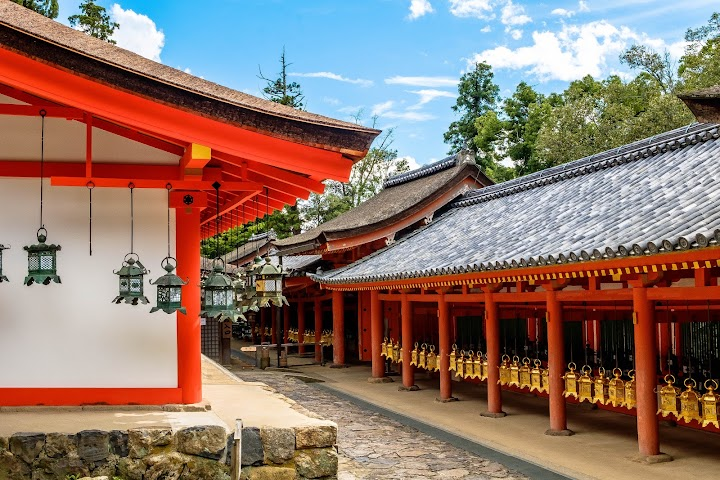
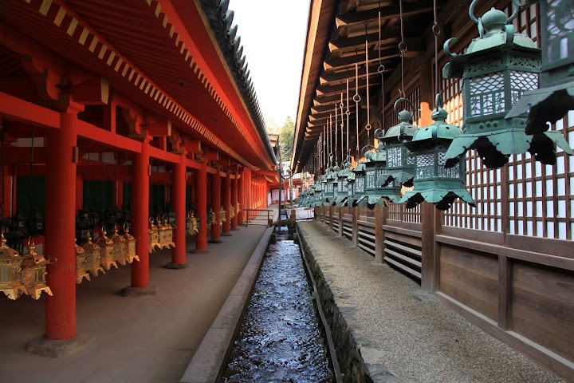
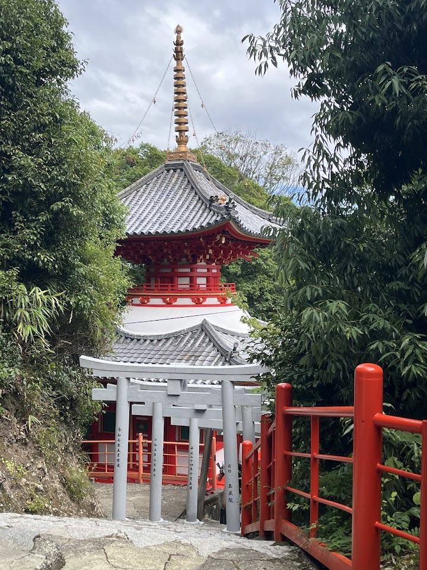
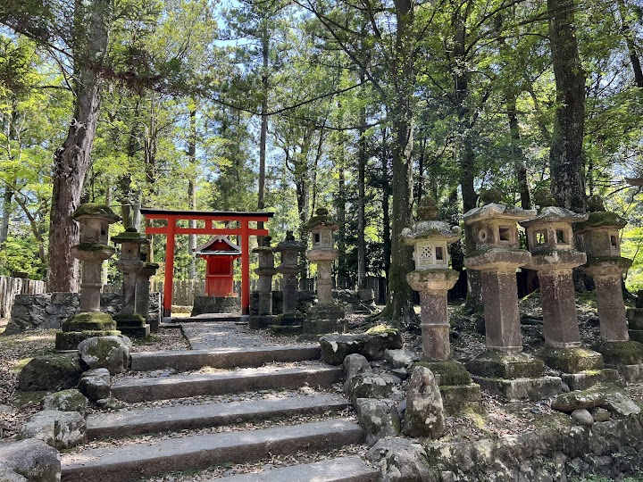
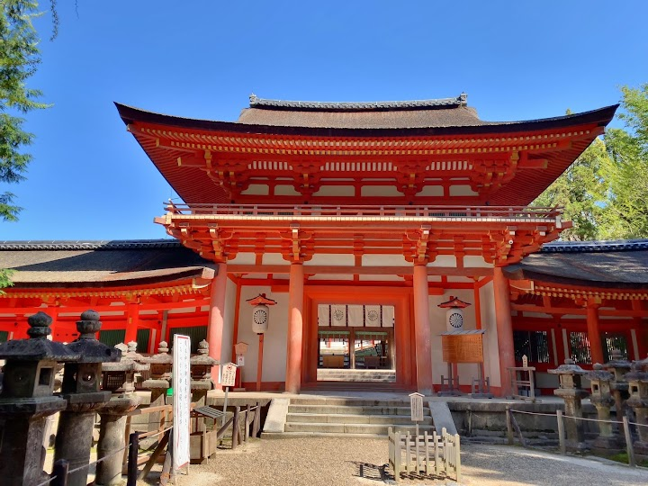

Kasugataisha Shrine
Kasugataisha is a Shinto shrine established in 768, with bright vermilion columns and thousands of stone and bronze lanterns lining the approach, and a UNESCO World Heritage Site. The forested path to it passes through the deer park and is lovely in winter.
Open in Google Maps (street view, more photos and reviews there)






Visitor tips on finding it and getting there
Be sure to wear comfortable walking shoes, as you’ll need to hike up a long mountain path. Along the way, you’ll be welcomed by countless stone lanterns and many friendly deer. In Nara, deer are regarded as sacred messengers of the gods and have been carefully protected for centuries. You’ll also find monuments dedicated to them, reflecting their special place in Nara’s history and culture.